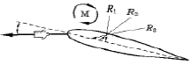
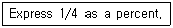
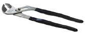
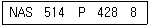
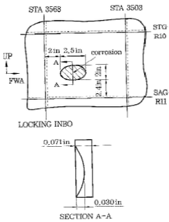
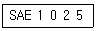
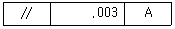

항공기체정비기능사 (2011-04-17 기출문제)
1과목: 비행원리
1. 다음 중 비행기의 세로 안정에서 평형(trim) 상태를 나타낸 것은? (단, CM은 키놀이 모멘트 계수이다.)
- CM = 0
- CM ＞ 0
- CM ＜ 0
- CM ≠ 0
(정답률: 85%)

2. 평균 공력시위(MAC : mean aerodynamic chord)란 무엇인가?
- 한쪽 날개 끝에서 다른 쪽 날개 끝까지의 투영의 길이
- 날개의 윗면과 아랫면에 작용하는 압력이 작용하는 점
- 주날개의 항공역학적 특성을 대표하는 부분의 시위
- 날개골의 기준이 되는 점으로 받음각이 변하더라도 모멘트 값이 일정한 점
(정답률: 47%)
3. 비행기에 작용하는 공기력 중에서 압력항력과 마찰 항력을 합한 것을 무엇이라 하는가?
- 조파항력
- 유도항력
- 형상항력
- 와류항력
(정답률: 66%)
4. 중량이 2500kgf, 날개면적 20m2인 비행기가 120㎞/h의 속도로 비행할 때 양력계수는? (단, 공기의 밀도는 0.125 kgfㆍs/m4이다.)
- 0.71
- 1.8
- 2.0
- 7.8
(정답률: 55%)
5. 비행기의 기수가 회전방향과 반대인 방향으로 틀어져 있는 움직임을 무엇이라 하는가?
- 스핀(spin)
- 역틀림(adverse yaw)
- 젖힘효과(sweep back effect)
- 가로진동(lateral oscillation)
(정답률: 85%)
6. 다음 중 절대압력에 대한 설명으로 옳은 것은?
- 대기압과 계기압력의 차이다.
- 해면에서의 절대압력은 항상 0(zero)이다.
- 완전진공을 0(zero) 압력으로 하여 측정한 압력이다.
- 압력이 측정되는 곳에 대기압을 0(zero) 압력으로 하여 측정된 압력이다.
(정답률: 59%)
7. 항공기의 상승률에 대한 설명으로 옳은 것은?
- 중량이 적을수록 상승률은 감소한다.
- 이용마력이 클수록 상승률은 감소한다.
- 필요마력이 클수록 상승률은 감소한다.
- 프로펠러의 효율이 클수록 상승률은 감소한다.
(정답률: 70%)
8. 회전익 항공기에서 회전축에 연결된 회전날개 깃의 하나의 수평축에 대해 위 아래로 움직이는 운동은?
- 스핀 운동
- 리드 - 래그 운동
- 플래핑 운동
- 자동 회전 운동
(정답률: 76%)
9. 비행기가 항력을 이기고 앞으로 움직이기 위한 동력은? (단, T:추력 , V:비행기 속도이다.)
- T/V
- V/T
- TV
- TV/2
(정답률: 75%)
10. 날개 끝 실속을 방지하기 위한 대책이 아닌 것은?
- 실속펜스를 부착한다.
- 와류 발생창치를 설치한다.
- 크루거 앞전 형태를 갖춘다.
- 워시 아웃 형상을 갖도록 해준다.
(정답률: 51%)
11. 입구의 지름이 10cm이고, 출구의 지름이 20cm인 원형관에 액체가 흐르고 있다. 지름이 20cm 되는 단면적에서의 속도가 2.4m/s 일 때 지름 10cm 되는 단면적에서의 속도는 약 m/s인가?
- 4.8
- 9.6
- 14.4
- 19.2
(정답률: 68%)
12. 전진속도가 없을 때 헬리콥터의 자동회전에 대한 설명으로 틀린 것은?
- 기관의 정지 시의 비행이다.
- 점차 일정한 속도로 하강한다.
- 자동 회전의 회전은 풍차가 돌아가는 원리와 같다.
- 자동 회전에 의한 항력은 같은 면적의 낙하산 항력의 2배 이다.
(정답률: 59%)
13. 다음 중 밸런스 탭(balance tab)에 대한 설명으로 옳은 것은?
- 자동 비행을 가능하게 한다.
- 조종석의 조종장치와 직접 연결되어 탭만 작동시켜 조종면을 움직인다.
- 조종사가 조종석에서 임의로 탭의 위치를 조정 할수 있도록 되어 있다.
- 1차 조종면과 반대 또는 같은 방향으로 움직이도록 기계적으로 연결되어 조타력을 가볍게 한다.
(정답률: 59%)
14. 날개 위에 수직 충격파와 충격 실속이 발생되면 항력이 급증하게 되는 마하수는?
- 임계 마하수
- 순항 마하수
- 충격 마하수
- 항력 발산 마하수
(정답률: 61%)
15. 실속 이내의 선형 구간에서 받음각이 증가함에 따라 압력중심 (c.p)의 위치변화로 옳은 것은?

- R3 → R1 → R2
- R1 → R3 → R2
- R3 → R2 → R1
- R1 → R2 → R3
(정답률: 72%)
16. 다음 중 항공기 정비방식이 아닌 것은?
- 하드타임
- 온 - 모니터링
- 온 - 컨디션
- 컨디션 모니터링
(정답률: 64%)
17. 다음 영문의 내용에 대한 옳은 값은?

- 0.25
- 2.5
- 20
- 25
(정답률: 64%)
18. 게이지 블록 (gauge blocks)에 대한 설명으로 틀린 것은?
- 사용하기 전에 마른 걸레나 솔벤트로 방청제 등의 이물질을 닦아낸다.
- 사용 시 손가락 끝으로 잡아 접촉면적을 되도록 작게 한다
- 이론상 측정력은 접촉 면적에 비례하여 증가되어야 하며, 실제로는 표준이 되는 측정력을 사용하는 것이 좋다.
- 측정할 때 정밀도는 온도와는 관련이 없고, 링킹(wringking)작업과 가장 관련이 깊다.
(정답률: 69%)
19. 활주로 횡단 시 관제탑에서 사용하는 신호등의 신호로 녹색등이 켜져 있을 때의 의미와 그에 따른 사항으로 옳은 것은?
- 위험 - 정차
- 안전 - 횡단가능
- 안전 - 빨리 횡단하기
- 위험 - 사주를 경계한 후 횡단가능
(정답률: 90%)
20. 물림 턱의 간격을 쉽게 조절할 수 있으며, 물림 턱이 깊어서 강력하게 잡을 수 있는 그림과 같은 공구의 명칭은?

- 커넥터 플라이어
- 콤비네이션 플라이어
- 워터펌프 플라이어
- 익스터널 링 플라이어
(정답률: 72%)
2과목: 항공기정비
21. 다음 중 전기화학적 부식(galvanic corrosion)이 발생할 수 있는 경우는?(오류 신고가 접수된 문제입니다. 반드시 정답과 해설을 확인하시기 바랍니다.)
- 배터리 충전액이 넘쳐 흐를 때
- 항공기 전기계통에 습기가 침투할 때
- 서로 같은 금속 사이에 윤활유가 침투 할 때
- 서로 다른 금속 사이에 오염된 습기가 침투할 때
(정답률: 43%)
22. 항공기에 관한 영문 용어가 한글과 옳게 짝지어진 것은?
- airframe - 원동기
- unit - 단위 구성품
- structure - 장비품
- power plant - 기체구조
(정답률: 86%)
23. 다음과 같은 부품 번호를 갖는 스크루에 대한 설명으로 옳은 것은?

- 길이는 4/16 이다.
- 길이는 2/16 이다.
- 커팅 둥근머리 스크루이다.
- 100도 평머리 나사 합금강 스크루이다.
(정답률: 67%)
24. 다음 중 항공기 기체의 정시점검의 종류가 아닌 것은?
- A점검
- C점검
- D점검
- E점검
(정답률: 86%)
25. 항공기 세제 중 메틸클로로포름(methyl chloroform)이라고도 하며, 일반 세척과 그리스 세척제로 사용되고 있으며 장시간 사용하면 피부염을 일으킬 수 있으므로 주의해야 할 세제는?
- 건식 세척 솔벤트
- 케로신
- 메틸에틸케튼 (MEK)
- 안전 솔벤트
(정답률: 48%)
26. 접촉되어 있는 2개의 재료가 녹아서 다른 쪽에 들러붙은 형태의 손상은?
- 융착(gall)
- 스코어(score)
- 균열(crack)
- 가우징(gouging)
(정답률: 92%)
27. 다음 중 래칫 핸들이나 스피드 핸들에 연결하여 사용하는 것이 아닌 것은?
- 어댑터
- 익스텐션 바
- 브레이커 바
- 유니버셜 조인트
(정답률: 66%)
28. 응력 외피 수리 시 리벳을 이용하여 패치를 부탁할 때 리벳 끝거리로 옳은 것은?
- 사용 리벳지름의 1.5배로 한다.
- 사용 리벳지름의 2.5배로 한다.
- 사용 리벳길이의 1.5배로 한다.
- 사용 리벳길이의 2.5배로 한다.
(정답률: 65%)
29. 비파괴검사방법 중 표면에 열린 결함만 검출할 수 있는 것은?
- 침투탐상검사
- 와전류탐상검사
- 자분탐상검사
- 초음파탐상검사
(정답률: 69%)
30. 항공기 유관 (hose) 외부에 부착되어 있는 식별표(decal)는 무엇을 표시하기 위한 것인가?
- 호스의 재질
- 호스의 제작번호
- 호스의 사용 가는 압력
- 호스의 흐르는 액체의 종류
(정답률: 74%)
31. A급 화재의 진화에 사용되며 유류나 전기화재에 사용해서는 안되는 소화기는?
- 분말 소화기
- 이산화탄소 소화기
- 물 펌프 소화기
- 할로겐화합물 소화기
(정답률: 82%)
32. 계류 앵커(tie-down anchor)에 대한 설명으로 틀린 것은?
- 패드 아이(pad eye)
- 계류 앵커가 설치되어 있는 장소는 일반적으로 적색 페인트 표시를 한다.
- 소형 단발 항공기의 계류 앵커는 정해진 최소 장력을 갖고 있어야 한다.
- 주기장을 만들 때 설치되는 고리모양의 피팅을 말한다.
(정답률: 51%)
33. 항공기 정비에서 오버홀에 대한 설명이 아닌 것은?
- 시한성 정비방법이다.
- 신뢰성 정비방법이다.
- 사용시간이 0으로 환원된다.
- 기체와 장비 모두를 대상으로 할 수 있다.
(정답률: 68%)
34. 수리를 위해 사용되는 리벳의 지름은 무엇을 기준으로 정하는가?
- 판의 두께
- 리벳을 섕크의 길이
- 리벳 간의 거리
- 리벳 작업할 판의 모양
(정답률: 71%)
35. 유리 섬유와 수지를 반복해서 겹쳐 놓고 가열장치나 오토 클레이브 안에 그것을 넣고 열과 압력으로 경화시켜 복합 소재를 제작하는 방법은?
- 압축 주형방식
- 필라멘트 권선방식
- 습식 적층방식
- 유리 섬유 적층방식
(정답률: 73%)
36. 설계하중 값을 옳게 나타낸 것은?
- 한계하중 ＋ 안전계수
- 한계하중 × 안전계수
- 종극하중 ＋ 안전계수
- 종극하중 × 안전계수
(정답률: 73%)
37. 헬리콥터의 꼬리 회전날개에 관한 설명으로 옳은 것은?
- 플래핑이 불가능하다.
- 리드래그 운동이 가능하다.
- 피치각의 변화가 가능하다.
- 오토 로테이션(auto rotation) 상태에서는 피치각을 변화시킬 수 없다.
(정답률: 45%)
38. 헬리콥터의 동력 구동축에 대한 설명으로 관계가 먼 것은?
- 동력 구동축은 기관 구동축, 주회전날개 구동축 및 꼬리 회전날개 구동축으로 구성되어 있다.
- 구동축의 양끝은 스플라인으로 되어 있거나 스플라인으로 된 유연성 커플링이 장착되어 있다.
- 진동을 감소시키기 위해 동적인 평형이 이루어지도록 되어 있다.
- 지지 베어링에 의해서 진동이 발생할 수 있으므로 회전을 고려한 베어링의 편심을 이뤄야 한다.
(정답률: 61%)
39. 그림에서 기체 손상 부분의 외피(skin) 두께는 몇 in인가?

- 2.5
- 2.4
- 0.071
- 0.030
(정답률: 51%)
40. 다음 중 나셀의 구성요소에 해당하지 않는 것은?
- 방화벽
- 스킨
- 카울링
- 쇽 스트러트
(정답률: 76%)
3과목: 항공기체
41. 기계재료에 필요한 일반적인 성질이 아닌 것은?
- 재료의 보급과 소량생산이 가능해야 한다.
- 주조성, 소성, 절삭성 등이 양호해야 한다.
- 열처리성이 우수하며, 표면처리성이 좋아야 한다.
- 기계적 성질, 화학적 성질이 우수하고 경량화가 가능해야 한다.
(정답률: 74%)
42. 항공기가 이ㆍ착륙할 때 받는 추가적인 하중과 관련된 힘은?
- 구심력
- 원심력
- 관성력
- 표면장력
(정답률: 52%)
43. 일반적인 항공기에서 조종간을 당기면 항공기의 자세는 어떻게 변하는가?
- 기수 상승
- 좌선회
- 기수 하강
- 우선회
(정답률: 91%)
44. 비행기의 날개 길이가 10m,날개 면적이 20m2일 때, 이 날개의 가로세로비는?
- 2
- 3
- 4
- 5
(정답률: 54%)
45. 항공기 재료 중 알클래드(alclad) 판의 특징은?
- 라이트 홀 구조
- 강화 탄소 섬유 피복
- 순수 알루미늄 피복
- 순수 스테인리스 피복
(정답률: 78%)
46. 고(高)고도를 비행하는 항공기는 고도에 따른 기압 차에 의한 압력에 견딜 수 있도록 설계하는데 이렇게 설계된 동체 내부를 무엇이라 하는가?
- 여압실
- 고장력실
- 내부응력실
- 트러스실
(정답률: 74%)
47. 다음과 같은 철강 재료 식별표시에서 각각의 표시와 의미가 잘못 짝지어진 것은?

- SAE : 미국 철강협회 규격
- 1 : 탄소강
- 0 : 5대 기본원소 이외의 합급 원소가 없음
- 25 : 탄소 0.25% 함유
(정답률: 65%)
48. 플라스틱 가운데 투명도가 가장 높으며, 광학적 성질이 성질이 우수하여 항공기용 창문유리로 사용되는 재료는?
- 폴리염화비닐(PVC)
- 에폭시 수지(epoxy resin)
- 페놀 수지(phenolic resin)
- 폴리메타크릴산메틸 (polymethyl methacrylate)
(정답률: 62%)
49. 패브릭 (fabric)으로 둘러싸여 있는 강철 와이어(steel wire)가 고무 사이에 끼어 있는 구조로써 휠플랜지에 접촉하는 타이어의 끝단 부분은?
- 트레드 리브
- 비드
- 트레드 그루브
- 사이드 월
(정답률: 53%)
50. 헬리콥터의 착륙장치에 대한 설명으로 틀린 것은?(오류 신고가 접수된 문제입니다. 반드시 정답과 해설을 확인하시기 바랍니다.)
- 휠형 착륙장치는 자신의 동력으로 지상 활주시 가능하다.
- 스키드형의 착륙장치는 자신의 동력으로 지상 활주가 가능하다.
- 스키드형은 접개들이식 장치를 갖고 있어 이ㆍ착륙이 용이 하다.
- 휠형 착륙장치는 지상에서 취급이 어려운 대형 헬리콥터에 주로 사용된다.
(정답률: 51%)
51. 헬리콥터의 꼬리부분에 해당하지 않는 것은?
- 핀(fin)
- 테일붐
- 연료 및 오일 탱크
- 파일론
(정답률: 74%)
52. 물체의 외력이 작용하면 내력이 발생하는데, 내력을 단위면적당의 크기로 표시한 것은?
- 응력
- 하중
- 변형
- 탄성
(정답률: 73%)
53. 금속재료의 열처리 목적이 아닌 것은?
- 충격저항 감소
- 기계적 성질 개선
- 재료의 가공성 개선
- 내마멸성 및 내식성 향상
(정답률: 54%)
54. 두 겹 또는 그 이상의 보강재를 사용하여 서로 겹겹이 덧붙이는 형태로 각겹(ply)은 서로 다른 재질이고, 한 방향 혹은 두 방향 형태의 직물이 사용된 혼합 복합 소재의 구조 부재는?
- 탄소 섬유(carbon fiber)
- 선택적 배치(selective placement)
- 인터 플라이 혼합재(inter - ply hybrid)
- 인트라 플라이 혼합재(intra - ply hybrid)
(정답률: 62%)
55. 프리휠 클러치(freewheel clutch)라 고도 하며, 헬리콥터에서 기관 브레이크의 역할을 방지하기 위한 클러치는?
- 오버러닝 클러치(over running clutch)
- 원심 클러치(centrifugal clutch)
- 스파이더 클러치(spider clutch)
- 드라이브 클러치(drive clutch)
(정답률: 76%)
56. 세미 모노코크 (semi monocoque) 구조에서 벌크 헤드에 대한 설명은?
- 동체 앞뒤에 배치되어 동체가 비틀림 하중에 의한 변형을 막아주며, 동체에 작용하는 집중하중을 외피에 전달하여 분산시킨다.
- 날개 단면의 기본 모양을 유지하며 하중의 대부분을 담당한다.
- 알루미늄 합금판으로 항공기 동체의 외관을 덮고 있으며, 동체에 작용하는 전단력과 비틀림 하중을 담당한다.
- 동체의 길이 방향으로 배치되고 동체의 기본 모양을 형성하며, 동체에 작용하는 휨 모멘트와 축방향의 인장력과 압축력을 담당한다.
(정답률: 56%)
57. 조종계통의 조종방식 중 기체에 가해지는 중력가속도나 기울기를 감지한 결과를 컴퓨터로 계산하여 조종사의 감지 능력을 보충하도록 하는 방식의 조종장치는?
- 수동 조종장치(manual control)
- 유압 조종장치(hydraulic control)
- 플라이 바이 와이어(fly - by - wire)
- 동력 조종장치(powered control)
(정답률: 78%)
58. 항공기 도면에서 다음의 표시는 어떤 공차의 종류인가?

- 경사공차
- 위치공차
- 자세공차
- 끼움공차
(정답률: 49%)
59. 한쪽 끝은 힌지 지지점이고, 다른쪽은 롤러 지지점인 보는?
- 단순보
- 외팔보
- 고정보
- 고정지지보
(정답률: 43%)
60. 항공기 구조부재 중 지름이 10cm, 길이가 250cm인 원형기둥의 세장비는?
- 50
- 75
- 100
- 125
(정답률: 49%)
이유: 비행기의 세로 안정에서 평형 상태를 유지하기 위해서는 기울기나 회전이 없어야 하며, 따라서 어떤 힘에 의해서도 비행기의 세로 방향이 바뀌지 않아야 한다. 이를 위해서는 비행기의 중심축과 공기 역학적인 중심축이 일치해야 하며, 이를 위해서는 CM 값이 0이 되어야 한다. CM 값이 양수이면 비행기의 세로 방향이 위로 기울어지고, 음수이면 아래로 기울어진다. 따라서 CM 값이 0이어야 비행기의 세로 안정 상태를 유지할 수 있다.